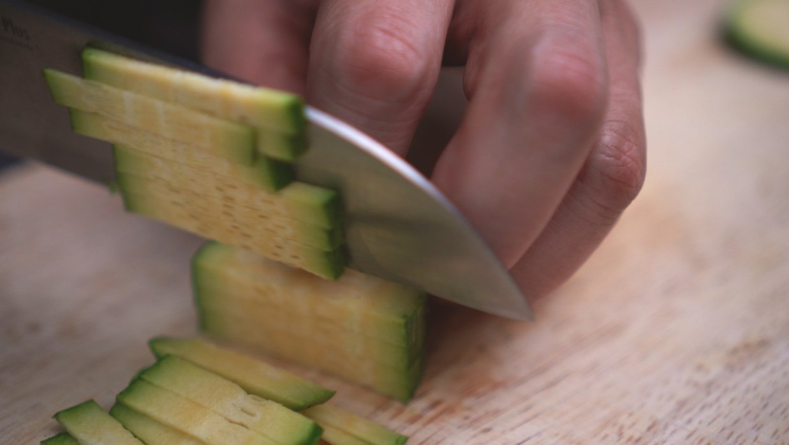
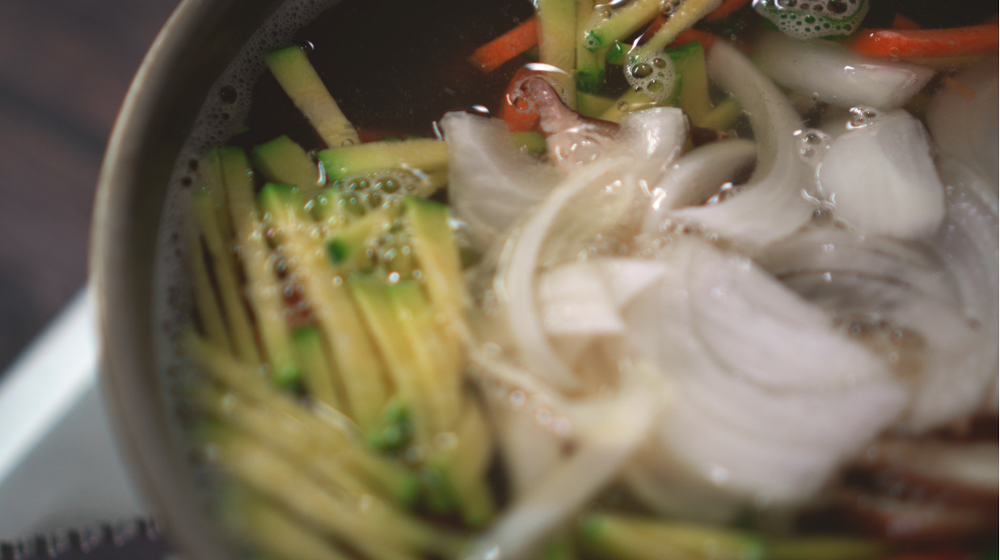
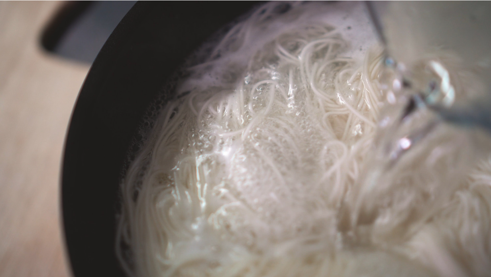
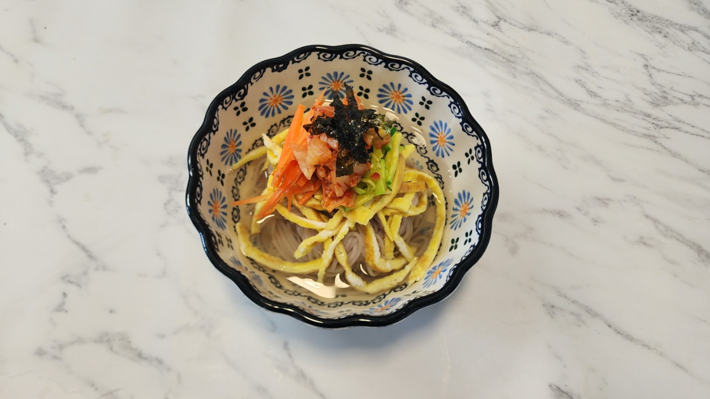

First beat the eggs, and spread the eggs around the pan. When fully cooked, gently fold the egg omlette and slice it thinly.
Step 2 Then slice the zucchini and carrot. Fry both on the pan until it is lighly cooked.
Step 3 Add the salt and soy sauce into a soup pot. Put the soup stock into it and boil it thoroughly until it reaches 140 F.
Step 4 Boil the flour noodles separately. After it is soft, pour out the hot water, and run the noodles under cold water.
Step 5 Then your done! Put the noodles on a bowl with the zucchini and carrot on top. Then, pour the hot broth on top of the noodles and you're done! It is best to enjoy the noodles hot before it gets soggy.
If there are leftovers, it is best to throw it away as the noodle taste bad when it gets cold and soggy. Make sure not to make too much noodles. We do not want to waste food!